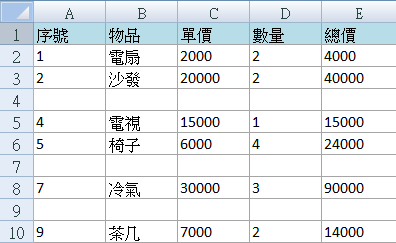
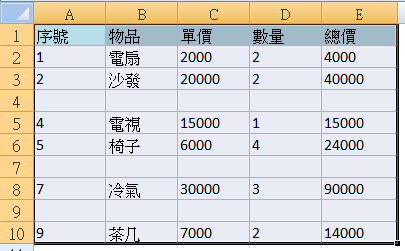
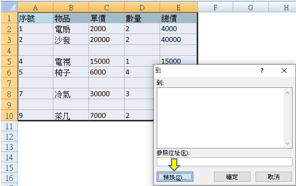
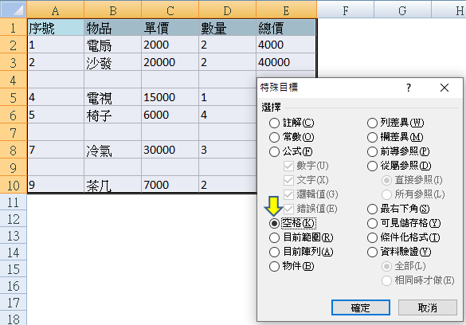
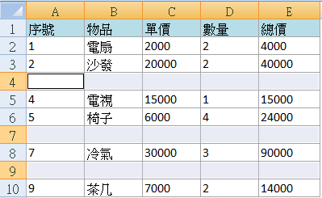
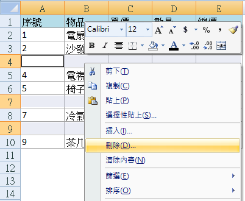

Excel教學：使用Ctrl+G快捷鍵高效移除空白列的方法

在處理 Excel 資料時，我們經常會遇到需要移除空白列的情況。這些空白列可能是由於數據整理中的遺漏，或者是錯誤輸入導致的結果。當面對少量資料時，手動移除是可行的，但如果數據量龐大，一列一列選取刪除就變得非常耗時且效率低下。
今天，我們要介紹一個高效的方法，使用快捷鍵 Ctrl+G，幫助您迅速選取並移除所有的空白列。這個技巧不僅能夠節省時間，還能讓工作表保持整潔，提高數據處理的效率。
快速移除空白列的好處
在處理大量數據時，空白列會影響數據的整體性。利用 Ctrl+G 快捷鍵可以快速找到並移除所有空白列，避免手動操作中的繁瑣和錯誤。
使用Ctrl+G移除空白列的步驟
1. 檢查資料中的空白列
首先，檢查您的資料，確認哪些列是空白的。我們將使用自動化方法來選取並刪除這些空白列。
2. 選取資料範圍
選取要處理的資料範圍，確保只對需要移除的部分進行操作。這裡選擇您要移除空白列的區域。
3. 打開「前往」功能
按下 Ctrl+G 開啟「前往」對話框，然後選擇「特殊」。
4. 選取空白儲存格
在「特殊目標」對話框中，選擇「空格」選項，然後點擊「確定」。這樣，Excel 會自動選取所有空白儲存格。
5. 刪除空白儲存格
選中所有空白儲存格後，在任何一個被選中的空格上點擊右鍵，然後選擇「刪除」。在彈出的對話框中，選擇「整列」，然後按下「確定」。這樣所有空白列會被刪除。
6. 完成操作
操作完成後，空白列將被移除，並且下方的數據會自動上移，填補空白，讓您的資料更加整潔和有序。
常見問題與錯誤排查
在執行此技巧時，可能會遇到一些問題。以下是一些常見的解決方法：
-
問題1：刪除後部分數據消失？
- 檢查選中的範圍是否正確，確保只選取了空白列，並且刪除的是「整列」而不是單個儲存格。
-
問題2：Ctrl+G快捷鍵無效？
- 檢查您的快捷鍵設置，或者確保選中的資料區域包含空白列。
進一步提升效率的Excel技巧
除了使用 Ctrl+G 快捷鍵移除空白列，您還可以結合其他實用技巧來提高工作效率：
- Ctrl+Shift+L：快速開啟篩選功能，過濾不需要的資料。
- Ctrl+T：將數據範圍轉換為表格，更方便後續的操作和管理。
- Ctrl+D 和 Ctrl+R：分別用於向下和向右填充資料，非常適合快速複製資料。
這些快捷鍵能夠進一步提高您的Excel操作速度，並幫助您更輕鬆地完成大數據處理任務。
小結
使用 Ctrl+G 快捷鍵快速移除 Excel 中的空白列，不僅能有效提升數據處理的效率，還能讓您的工作表更加整潔有序。無論您是處理少量資料還是大量數據，這個技巧都能為您節省大量時間。現在就試試這個方法，讓您的Excel技能更上一層樓吧！
為什麼需要學習 Excel？AI 工具無法完全取代 Excel 的理由
學習 Excel 是每位現代職場人士必備的技能之一。Excel 不僅可以提升數據處理、分析能力，還能讓我們在工作中大幅提高效率。透過掌握 Excel 公式、圖表、VBA 巨集等技巧，許多重複性工作都可以被自動化處理，這能大大減少人為錯誤，並加快工作進度。
Excel 尤其在以下領域中發揮著關鍵作用：
- 財務與會計：Excel 的數據處理功能讓它成為財務人員的得力助手，無論是生成財務報表、進行預算編制，還是管理應收應付款。
- 數據分析與商業決策：Excel 可用來進行高效的數據分析，通過樞紐分析和圖表快速提取數據背後的洞見，幫助管理層作出明智的商業決策。
- 專案管理與行政工作：Excel 的自訂格式和範本功能可以用來管理專案進度，進行工作安排，讓行政工作者更輕鬆地跟進日常任務。
AI 工具的崛起與局限性
隨著 AI 工具（如 ChatGPT）的崛起，您可能會想：還需要學習 Excel 嗎？事實上，AI 工具確實能夠幫助生成並解釋 Excel 中的公式，這對解決一些簡單的數據處理問題非常有幫助。例如：
- 免費版的 ChatGPT 3.5 可以生成基本公式，如
SUM、VLOOKUP、IF，並解釋它們的用途。 - 付費版的 ChatGPT 4.0 能進一步協助處理更複雜的數據分析任務，如多步驟公式、數據模型和自動化流程。
然而，對於不熟悉 Excel 的人來說，單靠 AI 工具往往很難有效驗證結果，也難以靈活應對各種數據處理場景。因此，學習 Excel 的基礎知識仍然是必要的，這能幫助您更好地理解 AI 工具的輸出，並高效地與 AI 協同工作。
書本自學：從入門到進階的學習資源
如果你偏愛通過閱讀學習，以下這幾本書都是提升工作效率的好選擇，適合從入門到進階的 Excel 使用者。
1. 《Excel 自學聖經 (第二版)》
這本書被廣泛推薦為入門級的 Excel 學習資源，涵蓋從基本操作到高階應用。書中配有大量範例與圖表，能幫助讀者更好地掌握 Excel 中的公式、函數、資料整理等技巧。特別適合想要全面掌握 Excel 基礎的讀者。
2. 《Excel 最強商業實戰書：濃縮於一冊！》
點我前往金石堂 《Excel 最強商業實戰書：濃縮於一冊！》
這本書專注於商業應用場景，適合希望將 Excel 應用於財務、商業決策、數據分析等領域的使用者。書中的實例非常接地氣，能幫助您快速應用到實際工作中，是提升職場競爭力的利器。
線上課程：彈性學習，提升效率
線上課程提供了靈活的學習方式，不僅可以讓您在任何時間、任何地點進行學習，還能隨時更新學習內容，確保您掌握的技能與最新趨勢接軌。這對於工作繁忙的專業人士來說尤為方便，此外線上課程的價格通常比實體課程更具競爭力。
Hahow 線上課程平台
Hahow 是一個受歡迎的學習平台，涵蓋多種專業課程，適合不同層級的學習者。平台上的課程內容實用，並且由專業講師授課，讓學員可以在短時間內掌握實用技能。
- Excel 新手入門必修課：這門課程專為初學者設計，能幫助您快速上手 Excel 的基本操作與數據處理。
- 職場必備的 Excel 進階技法：針對有一定基礎的使用者，進一步學習進階函數、樞紐分析、圖表設計等技法。
Udemy 線上課程平台
Udemy 提供了豐富的課程選擇，無論是技術技能（如 Excel、Python），還是軟技能（如時間管理、領導力），您都能在 Udemy 上找到適合的課程。該平台經常提供折扣，尤其在促銷期間，您可以以實惠的價格學到高品質的內容。
- Udemy 線上課程－Excel：這門課程從基礎開始，一直到進階的樞紐分析和數據可視化，適合希望快速提升 Excel 技能的人士。
接案機會：利用技能在 Fiverr 開創自由職業生涯
如果您已經掌握了 Excel 或其他技能，除了將這些技能應用於工作，還可以利用 Fiverr 平台，將專業能力變現，並接觸全球客戶。
如何在 Fiverr 上接案？
- 註冊成為自由職業者：立即加入 Fiverr
- 設置服務頁面：
- 描述您的專業技能，並列出具體服務內容（如 Excel 報表設計、數據分析等）。
- 設定價格，提供不同層級的服務（如基本、高級、專業）。
- 展示您的過往作品，累積好評。
Fiverr 的優勢
- 全球買家：來自世界各地的用戶，提供多樣化的接案機會。
- 靈活性：自由掌控工作時間與項目數量。
- 簡單收款：佣金可直接提取至 PayPal 或銀行帳戶。
延伸閱讀
如果您想要更深入了解 Excel 的使用技巧，請點擊以下連結閱讀更多相關文章：點我前往更多Excel文章
如果您想要更深入其他VBA 的使用技巧，請點擊以下連結閱讀更多相關文章：點我前往更多VBA文章
如果您想要更深入其他Python 的使用技巧，請點擊以下連結閱讀更多相關文章：點我前往更多Python文章
如果您想要更深入了解 Fiverr 如何運作，並探索更多接案與學習的機會，請點擊以下連結閱讀專題文章：點我前往 Fiverr 全攻略
想要了解更多實用網站嗎？請點擊以下連結閱讀更多相關文章。點我前往更多文章
免責聲明：本文內包含的部分連結為聯盟行銷連結，若您透過這些連結購買產品或服務，我將獲得一定比例的佣金。這不會影響您的購買價格，感謝您的支持！